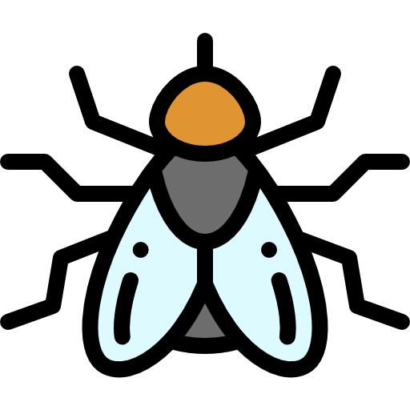

PROBLEMAS COM ALIMENTAÇÃO
PREGUIÇAS podem morrer de fome saciadas
| Preguiças podem demorar até um mês para digerirem uma refeição. Com tanto esforço requerido apenas para obter nutrição de sua dieta, ainda podem morrer de fome: se a temperatura do corpo de uma preguiça cair muito baixo, as bactérias em seu intestino que ajudam na digestão dos alimentos podem "parar de funcionar", e a preguiça pode morrer de fome mesmo com um estômago cheio. Para piorar a situação, as preguiças de dois dedos além de possuírem a menor e mais variável temperatura corporal de qualquer mamífero, não conseguem se arrepiar para se manterem aquecidas, ficando dependentes e reféns das condições ambientais. |
PREGUIÇAS precisam descer da árvore para defecar
| Uma vez por semana, as preguiças descem para defecar no chão, num esforço que lhes custa cerca de 8% da energia que ingerem em um dia e que as deixa particularmente vulneráveis aos predadores – metade das mortes de preguiças acontece durante a “ida ao banheiro”. A melhor hipótese para explicar esse ritual é que as traças que vivem nos pelos da preguiça atuam como um tipo de fertilizante, potencializando os níveis de nitrogênio na pele da preguiça que, por sua vez, estimula o crescimento de algas (as algas servem para camuflagem e fazem parte da alimentação das preguiças). Em uma relação simbiótica estranha, enquanto defeca no solo, a preguiça consegue renovar as traças de sua pele e permite que as traças dos pelos depositem ovos em suas fezes. |
MOSCAS que devoram a mãe viva
|  | As fêmeas dos cecidomiídeos, que são partenogênicas, param de se desenvolver quando ainda são larvas e se reproduzem sem colocar ovos. A prole desenvolve-se nos tecidos da mãe e não no útero e, sem abastecimento de nutrientes, começa a devorar a própria genitora. Ao longo dos dias, para crescer, a pupa lentamente devora a mãe de dentro para fora, acabando por ocupar-lhe o corpo todo até emergir e deixar para trás somente vestígios do mesmo, iniciando um novo ciclo na reprodução assexuada por partenogênese. |
|---|
COELHOS necessitam fazer acecotrofia
| Os coelhos precisam fazer a ingestão de suas fezes noturnas logo após serem expelidas a fim de digerir completamente as suas refeições (o que caracteriza acecotrofia). Esses excrementos denominados cecotrofos possuem um revestimento mucoso, são moles e menores que as fezes comuns, e são eliminados de 4 a 8 horas depois da alimentação. Acontece que os coelhos tiveram que se adaptar para digerir a celulose. Eles têm um apêndice alargado e ceco que contêm bactérias de digestão de celulose, mas os açúcares e outros nutrientes não são absorvidos completamente no intestino e vão para as fezes moles produzidas. Parte desse excremento é ingerido para passar através de seu sistema digestivo outra vez e, com isso, absorver todo o nutriente necessário. As fezes comuns expelidas pelos coelhos são duras e grandes, neste caso não ocorre a coprofagia. |  |
|---|
COALAS necessitam fazer coprofagia
 |
Assim como os filhotes de elefantes, pandas-gigantes e hipopótamos, os filhotes comem as fezes de suas mães ou de outros animais do rebanho para que lhe sejam transmitidos os micróbios cecais necessários para haver a digestão adequada da vegetação encontrada em seus ecossistemas. Quando esses animais nascem, seus intestinos são estéreis e não contêm essas bactérias. Sem isso, eles seriam incapazes de obter qualquer valor nutricional das plantas consumidas. Portanto, a coprofagia é obrigatória durante o período de desmame. |
|---|
TATUZINHOS-DE-JARDIM necessitam comer suas fezes
| Tatuzinhos-de-jardim são crustáceos membros da subordem Oniscidea. Os tatuzinhos passaram a viver de forma independente de ambientes aquáticos graças principalmente à presença de bolsa incubadora como um marsúpio, mas também à forma achatada do corpo, e a adaptações comportamentais e fisiológicas, entre elas o desenvolvimento de cutícula espessa e de estruturas para trocas gasosas. Esse grupo de seres vivos acumulam metais pesados e necessitam do elemento cobre para sobreviver, uma vez que quando o tatuzinho defeca, ele perde certa quantidade de cobre, eles praticam coprofagia para obter o elemento de volta. |
PANDAS dependem de até 14 horas de alimentação por dia
| Pandas (Ailuropoda melanoleuca) são ursos. Diferente de outros ursos que se alimentam de carne, pandas são herbívoros estritos especializados em comer bambu (que compõe 99% da dieta desses animais). O problema é que enquanto outros membros dessa família extraem grandes quantidades de energia do alimento (carne) os pandas podem chegar ao extremo de aproveitarem apenas cerca de 9% da energia consumida. Para tentar contornar essa situação, os pandas se alimentam durante 10 a 14 horas, consumindo até 6% de seu peso em bambu por dia. Porém, apesar de tamanha quantidade de bambu sendo consumida, a absorção da energia continua sendo escassa, isso porque os pandas descendem de ancestrais carnívoros e, seu sistema digestório não é apropriado para o processamento de matéria vegetal e sim de carne. |